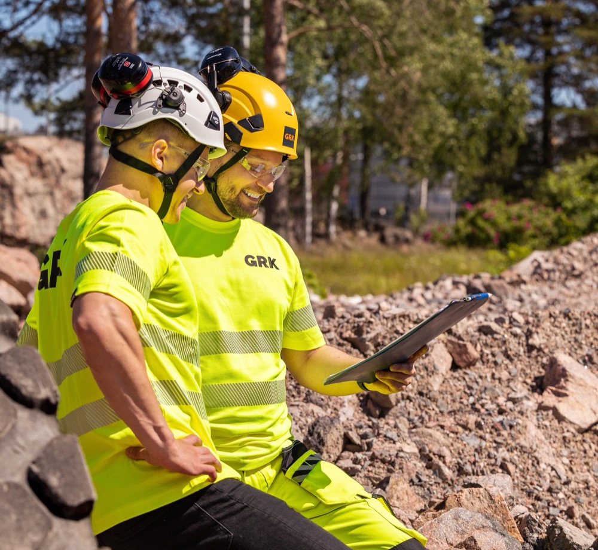
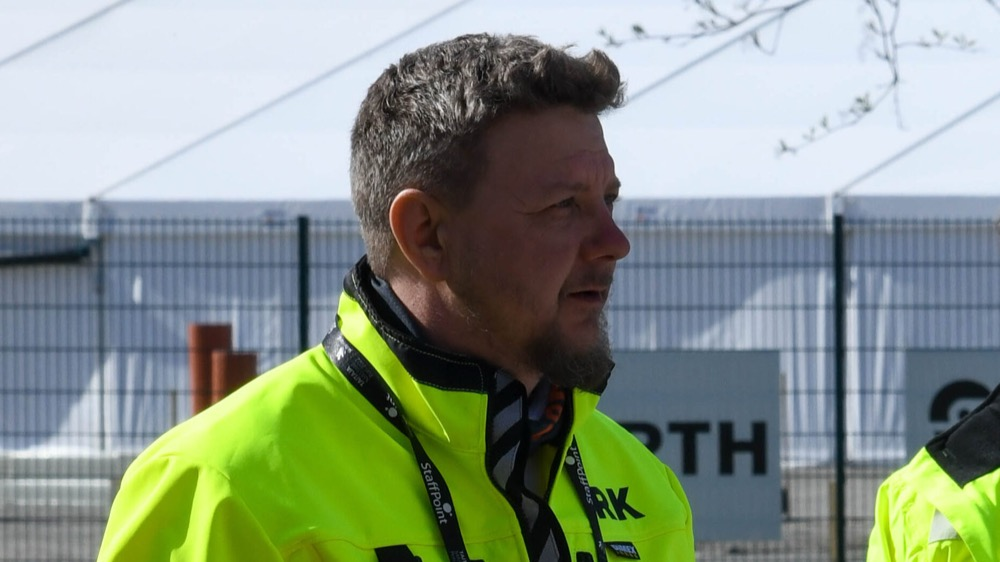
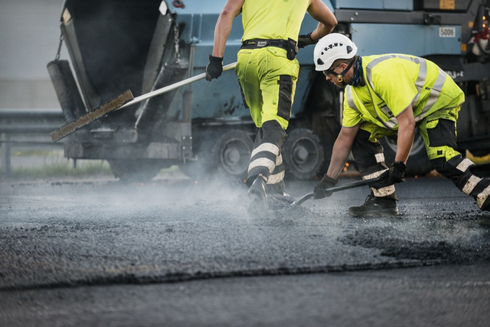
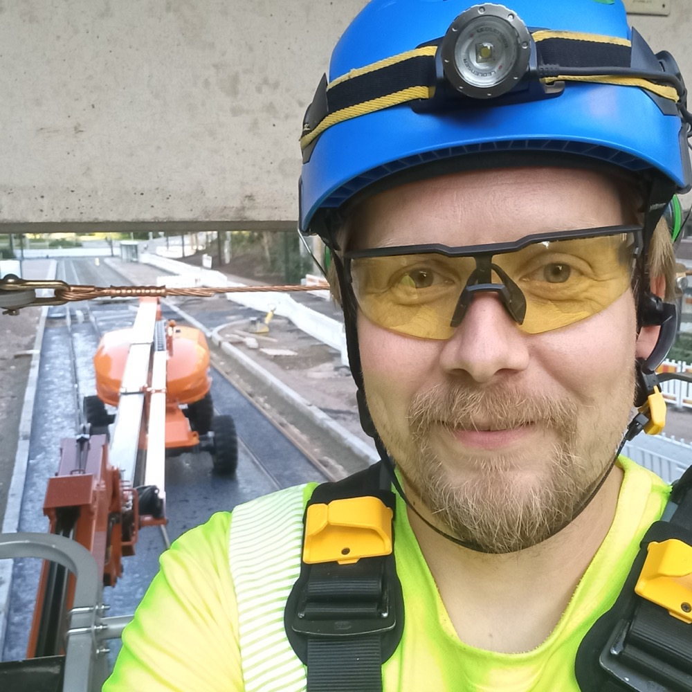
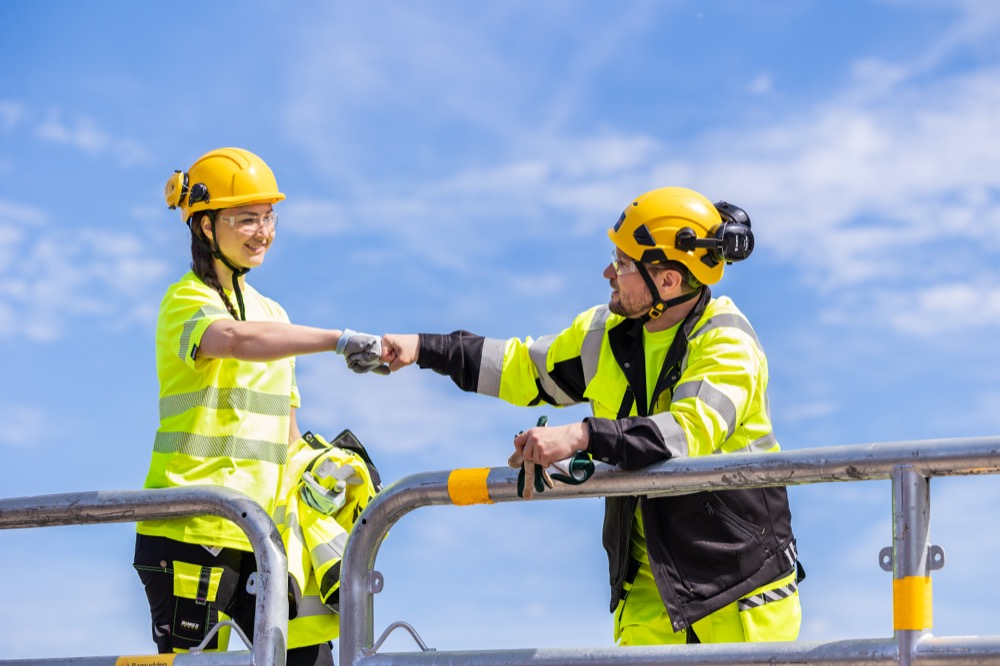
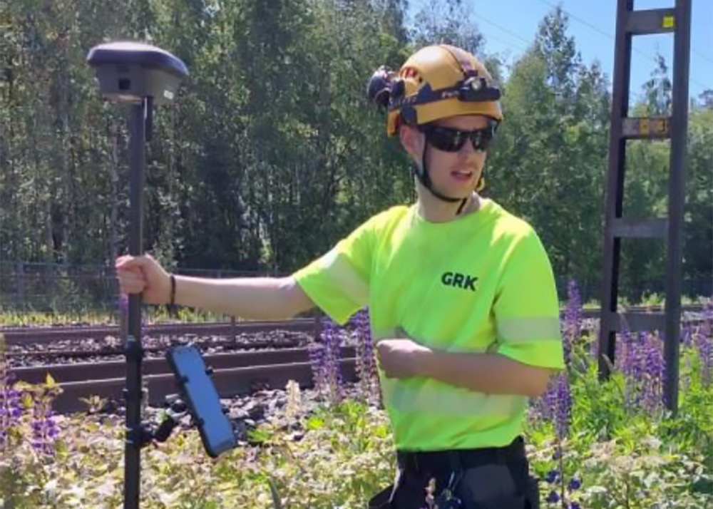
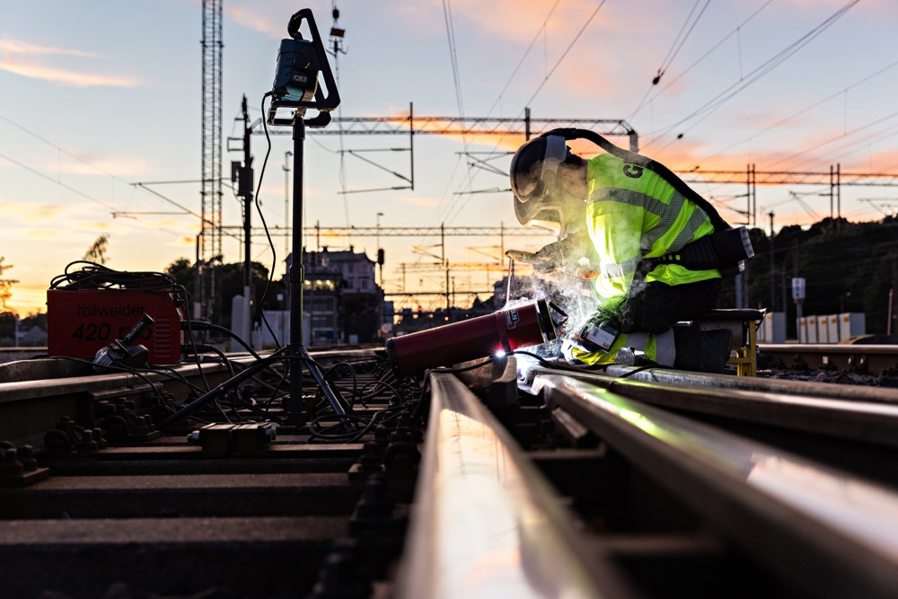
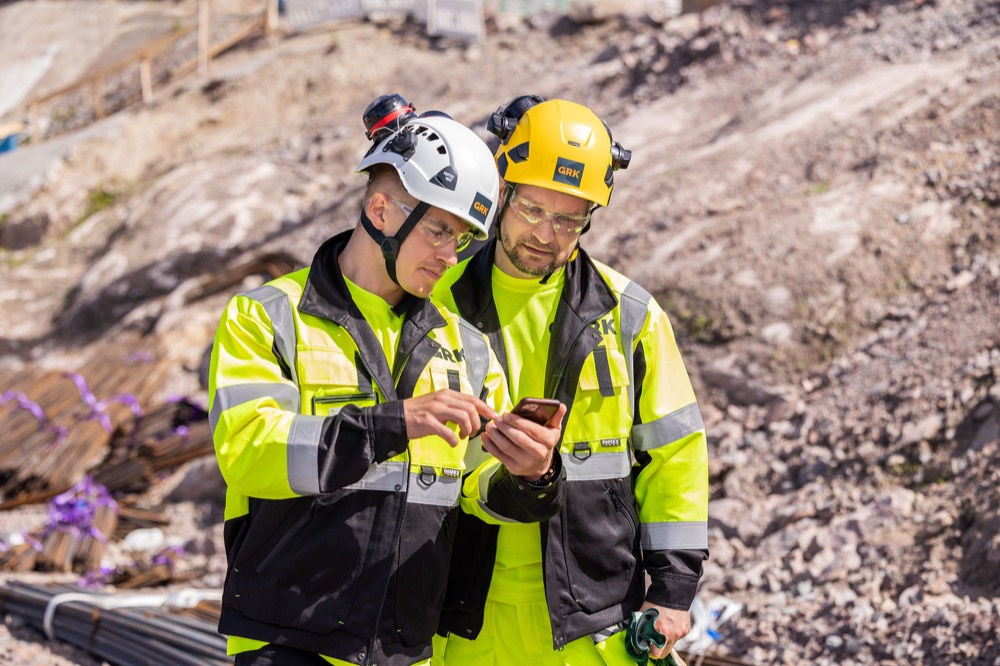
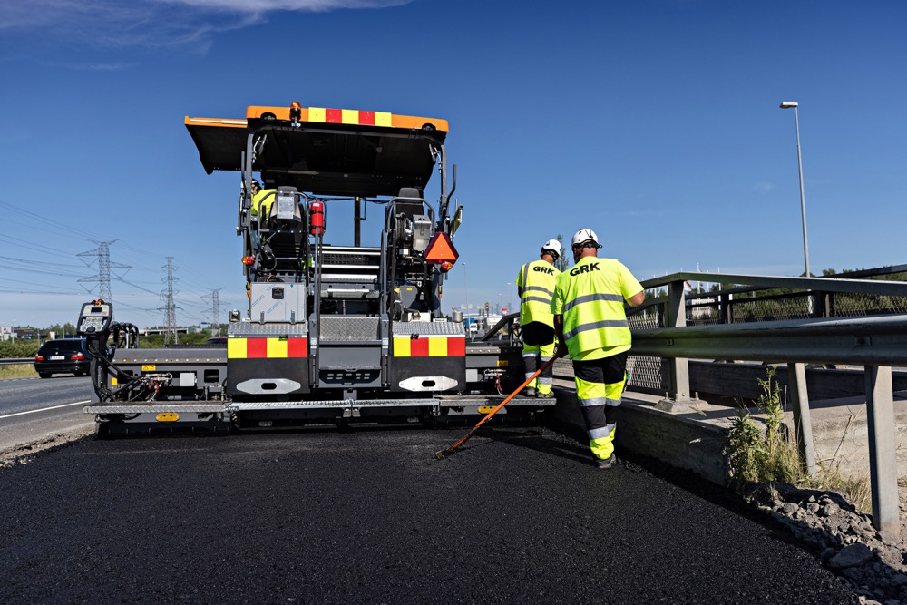

- Etusivu
- Töihin meille
Töihin meille
Rakennamme teitä, siltoja, ratoja ja sähköverkkoja Suomessa, Ruotsissa ja Virossa. Meillä saat vastuuta heti, ja päätökset tehdään lähellä työmaata.
- Vastuuta heti alusta
- Koulutamme itse
- Työmaita Suomessa, Ruotsissa ja Virossa









Avoimet työpaikat
Haet paikkaa TalentAdore-palvelussa. Jos sopivaa ei ole auki, jätä avoin hakemus.
Työmaapäälliköitä ja työnjohtajia taito- ja väylärakentamisen infrakohteisiin Pohjois-Suomeen ja Pohjois-Ruotsiin
GRK Suomi Oy ja GRK Sverige ABTyömaa ja työnjohtoPohjois-Suomi ja Pohjois-Ruotsi31.10.2026Rautateiden termiittihitsaajia
GRK Suomi OyAmmattilaisetSuomi ja ViroTäytetään sopivan löydyttyäKysyttävää ennen kuin haet?Johanna Korhonen, henkilöstöjohtaja+358 50 476 1076johanna.korhonen@grk.fi
Tehtävät työmaalta toimistoon
Etsimme sekä käsillä tekijöitä että johtajia. Moniin tehtäviin riittää oma ammatillinen tutkinto, eikä kaikkien tarvitse olla insinöörejä.
Työmaa
Käsillä tekijätRakennat, asennat ja ajat koneita työmaalla. Moni oppii työn tekemällä kokeneen tekijän rinnalla.
Työnjohto
Työmaan johtaminenVastaat työmaan aikataulusta, turvallisuudesta ja porukasta. Vastuuta saa niin paljon kuin uskaltaa ottaa.
Asiantuntijat
Toimisto ja tukiSuunnittelet, lasket ja hankit tai pidät huolta turvallisuudesta, taloudesta ja ihmisistä. Työmaakokemus on etu.
Mietitkö, mikä tehtävä sopisi sinulle?Johanna Korhonen, henkilöstöjohtaja+358 50 476 1076johanna.korhonen@grk.fi
Näin etenet
Teemme sekä pieniä että suuria urakoita, joten vastuuta voi kasvattaa askel kerrallaan. Moni harjoittelijamme jatkaa seuraavina kesinä ja jää vakituiseen työhön.
Kesätyö tai harjoittelu
Pääset oikeisiin töihin työmaalle tai toimistoon jo opiskeluaikana.
Oma vastuualue
Kokeneempi kollega perehdyttää, ja vastuuta tulee sitä mukaa kuin otat sitä.
Työnjohtoon
Johdat työvaihetta, porukkaa ja aikataulua omalla työmaallasi.
Hankkeen vetäjäksi
Pienemmät urakat kasvattavat valmiuksia isojen hankkeiden johtamiseen.

Oikeita töitä oikeilla työmailla
Teet monipuolisia ja vastuullisia töitä alan osaajien rinnalla. Harjoittelualueita ovat taito- ja väylärakentaminen, radan kunnossapito, päällystys ja ympäristöteknologia.
Milloin haetaan
Harjoittelupaikat haetaan vuosittain harjoitteluhaussa. Viime haussa saimme ennätysmäärän hakemuksia, joten hae heti, kun haku aukeaa.
Kesän 2026 haku on päättynyt
Haku aukeaa
Ilmoitus julkaistaan Avoimet työpaikat -sivulla ja LinkedInissä.
Hae TalentAdoressa
Kerro hakemuksessa, millaisesta työstä ja miltä alueelta olet kiinnostunut.
Sovitaan kesä
Kun paikka löytyy, sovimme työmaan ja aloituksen. Harjoittelu pyritään järjestämään lähelle kotia.
Kysyttävää hausta?Jere Hänninen, harjoittelu ja kesätyöt+358 40 559 4046jere.hanninen@grk.fi
Uratarinat
Ihmiset kertovat omin sanoin, millaista työ GRK:lla on.
Työnjohtaja, aloitti kesätyöntekijänä
Ensimmäiset kesät sillan työmaalla ja miten harjoittelusta tuli vakituinen työ.
Lue tarinaPaalutuskoneen operaattori, koulutettiin talossa
Kaivinkoneesta porapaalutukseen oman operaattorikoulutuksen kautta.
Lue tarinaTermiittihitsaaja, töissä Suomessa ja Virossa
Kiskojen hitsausta kahdessa maassa ja miten reissutyö järjestyy.
Lue tarinaSuunnittelija, vaihtoi alaa hoitotyöstä
Mitä sairaanhoitajan työstä on hyötyä infran suunnittelussa.
Lue tarinaSähköasentaja, sähköasemat ja voimajohdot
Energia-alan työmailla viikosta toiseen ja miten kuorma jaetaan tiimissä.
Lue tarinaTyömaapäällikkö, eteni pienistä urakoista isoihin
Miten pienemmät urakat kasvattivat valmiuksia ison hankkeen johtamiseen.
Lue tarinaHaalariharjoittelija, ensimmäinen kesä radalla
Radan kunnossapitoa ensimmäisenä opiskelukesänä.
Lue tarinaTarjouslaskija, siirtyi työmaalta toimistoon
Miksi työmaakokemuksesta on hyötyä tarjouslaskennassa.
Lue tarinaTyömaainsinööriharjoittelija, kesä päällystystyömailla
Päällystyskausi työnjohdon rinnalla ja mitä siitä jäi käteen.
Lue tarinaMiksi GRK:lle
Vastuuta heti
Pääset tekemään oikeita päätöksiä jo ensimmäisellä työmaalla. Vastuuta saa niin paljon kuin uskaltaa ottaa.
Matala byrokratia
Kun jotain huomataan, se korjataan. Asiat ratkaistaan siellä, missä työ tehdään.
Iso euroissa, pieni tavoissa
GRK kasvoi 20 hengen yrityksestä konserniksi 16 vuodessa. Toimimme silti yrittäjämäisesti ja ilman pönöttämistä.
Turvallisesti kotiin
Huolehdimme toisistamme, jotta jokainen pääsee päivän päätteeksi turvallisesti kotiin.
Täällä on rento meininki, mutta hommat kuitenkin hoituu.
Vastuuta saa aina niin paljon kun sitä uskaltaa itse kantaa.
Täällä saa olla ihan jokainen oma itsensä ja pääsee monenlaisiin eri urakoihin mukaan.
Koulutamme itse ja pidämme huolta
Opit työn kokeneiden tekijöiden rinnalla, ja pätevyydet hankitaan työn edetessä. Tehtäväkohtaiset edut kerrotaan työpaikkailmoituksessa.
- Perehdytys työmaalla
Kokeneempi työkaveri opastaa alusta asti. Käsillä tekijä oppii tekemällä.
- Pätevyydet ja kortit
Työ- ja ratatyöturvallisuuden pätevyydet ulkopuolisten kouluttajien kanssa. Paalutukseen on oma operaattorikoulutus.
- Työterveys ja vakuutus
Laajat työterveyspalvelut ja sairauskuluvakuutus.
- Onnistumiset palkitaan
Onnistumisista palkitaan reilusti. Palkka käydään läpi haun aikana tehtävän ja kokemuksen mukaan.
Usein kysytyt
Pitääkö minulla olla insinöörin tutkinto?
Kerrotteko palkan etukäteen?
Paljonko työssä pitää matkustaa?
Voinko soittaa ennen kuin haen?
Voinko hakea, vaikka sopivaa paikkaa ei ole auki?
Haenko myös Ruotsin ja Viron paikkoja täältä?
Soita ennen kuin haet
Moni soittaa ensin, ja se kannattaa. Kerromme tehtävistä, työmaista ja siitä, millainen paikka sopisi sinulle.